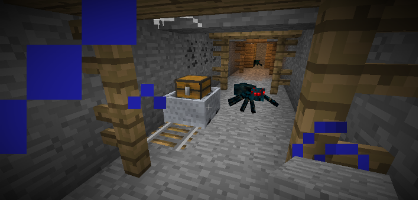
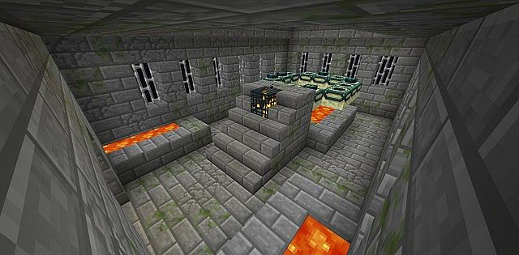
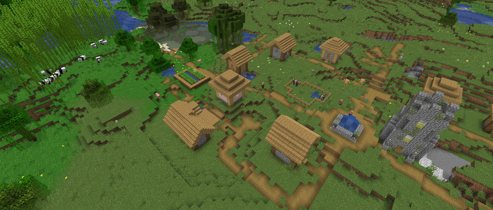

Les structures sont présentes dans tous les biomes et toutes les dimensions. En voici certaines d'entre elles.
Le Mineshaft
 Attention elle pique.Une des structures les plus courantes dans le jeu. Il est fréquent lors d'une session minage de tomber sur l'un d'entre eux. Rails, coffres secrets et araignées empoisonnées sont autant de choses que vous pour trouver en ces lieux.
Le Stronghold
 La chaleur serait un problème si on devait la gérer.Les forts sont des structures naturelles limitées à 128 par monde. Elles contiennent de nombreuses salles, portes, et d'autres éléments. Les forts sont composés de brique de pierre, de brique de pierre moussue, de brique de pierre fissurée, de portes en fer et de barreaux de fer. Ce sont aussi les seuls endroits où l'on trouve des portails de l'End à activer si l'on veut se rendre dans l'End. Vous pouvez être amené à un fort à l'aide d'un ou plusieurs yeux de l'Ender.
Les villages
 Une petite bourgade tranquilleLes villages (parfois appelés villages de PNJ) sont des groupes de bâtiments habités par des villageois, des chats, des golems de fer, et occasionnellement, des zombies-villageois, des marchands ambulants et des lamas de marchand, qui apparaissent naturellement dans le monde.
La citadelle de l'end
 Une des citadelles de l'end après la mort du dragon. Attention à la marche!
Une des citadelles de l'end après la mort du dragon. Attention à la marche!
Les Cités de l'End sont des structures générées naturellement sur les îles externes de l'End. Elles sont semblables à de grands châteaux ou arbres constitués principalement de briques de l'End et des différentes variantes de bloc de purpur. Elles sont éclairées par des barres de L'End. Elles sont aussi le seul endroit où des Shulkers peuvent être trouvés.